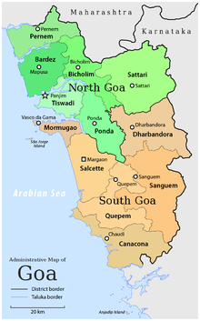

| Name: | Goa |
|---|---|
| Capital: | Panaji |
| Language: | Konkani |
| Chief Minister: | Pramod Sawant |
| Total Districts: | 2 |
| Population: | ~1.5 million (as per 2011 census) |
| Formation: | 30 May 1987 |
| Area: | 3,702 km² (smallest state in India) |
| Borders: | Maharashtra, Karnataka, Arabian Sea |
| Coastline: | ~160 km along the Arabian Sea |
Know more